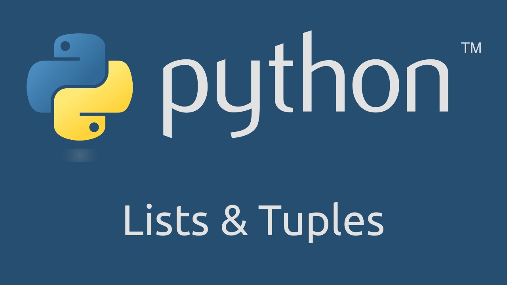
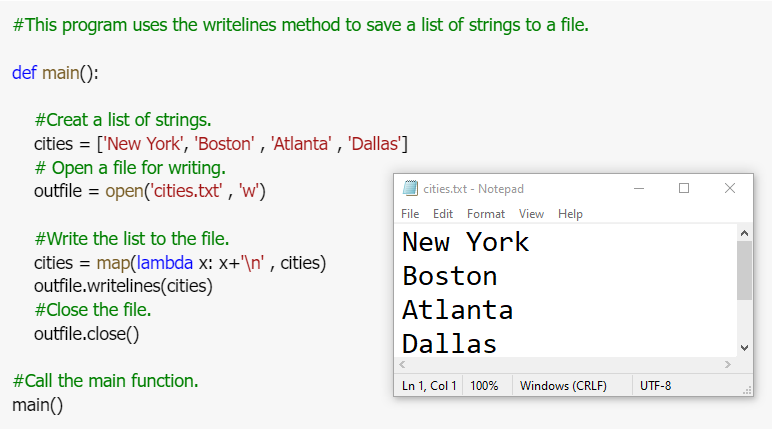
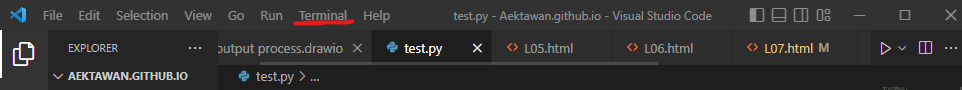
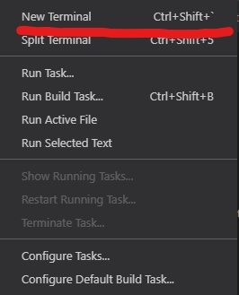
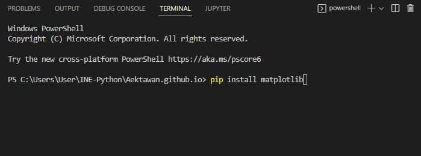
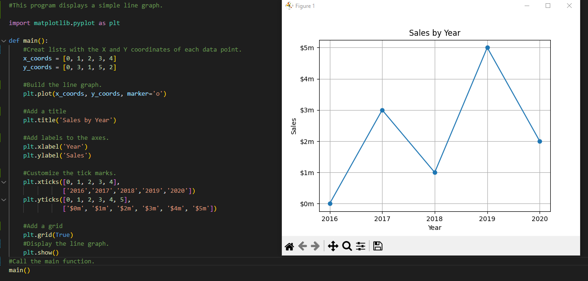
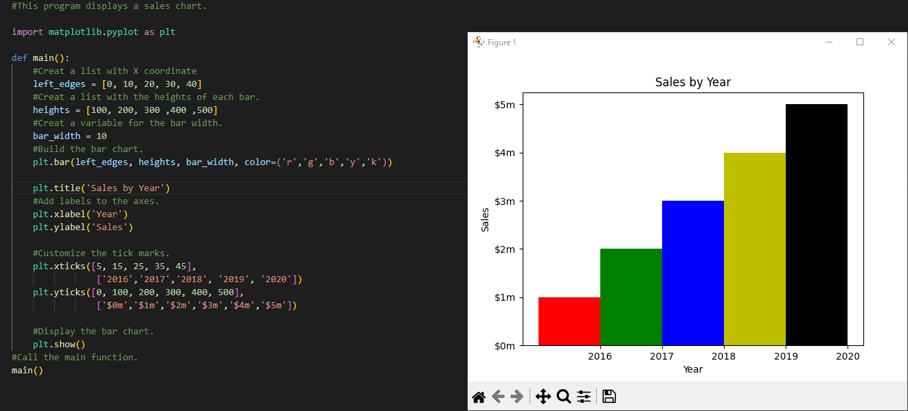
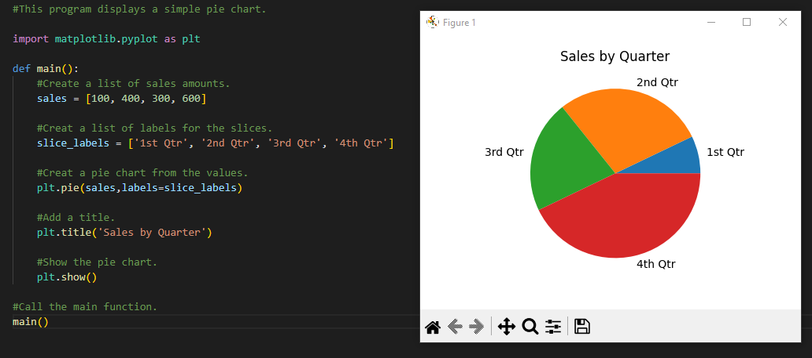

LISTS AND TUPLES
introduction
Sequences
In Python programming, sequences are a generic term for an ordered set which means that the order in which we input the items will be the same when we access them.
Python supports six different types of sequences. These are strings, lists, tuples, byte sequences, byte arrays, and range objects. We will discuss each of them.
- List is mutable, which means that a program can change its contents.
Python lists are similar to an array but they allow us to create a heterogeneous collection of items inside a list. A list can contain numbers, strings, lists, tuples, dictionaries, objects, etc.
Tuples are also a sequence of Python objects. A tuple is created by separating items with a comma. They can be optionally put inside the parenthesis () but it is necessary to put parenthesis in an empty tuple.
List
A list in Python is used to store the sequence of various types of data. Python lists are mutable type its mean we can modify its element after it created. However, Python consists of six data-types that are capable to store the sequences, but the most common and reliable type is the list.
A list can be defined as a collection of values or items of different types. The items in the list are separated with the comma (,) and enclosed with the square brackets [].
A list can be define as below
- List: an object that contains multiple data items
- Element: An item in a list
- Format: list = [item1, item2, etc.]
- Can hold items of different types
- print function can be used to display an entire list
- list() function can convert certain types of objects to lists
Example list
List Methods and Useful Built-in Functions
List Operator
- Repetition operator:makes multiple copies of a list and joins them together
- The * symbol is a repetition operator when applied to asequence and an integer
- Sequence is left operand, number is right
- General format: list * n
- Format: for x in list:

List Methods And Useful Built-In Functions
- An IndexError exception is raised if an invalid index is used
- len function: returns the length of a sequence such as a list
- Example: size = len(my_list)
- Returns the number of elements in the list, so the index of last element is len(list)-1
- Can be used to prevent an IndexError exception when iterating over a list with a loop
List Methods And Useful Built-In Functions
- You can use the in operator to determine whether an item is contained in a list
- General format: item in list
- Returns True if the item is in the list, or False if it is not in the list
- Similarly you can use the not in operator to determine whether an item is not in a list
Example Listmethods
two-dimensional lists
- Two-dimensional list: a list that contains other lists as its elements
- Also known as nested list
- Common to think of two-dimensional lists as having rows and columns
- Useful for working with multiple sets of data
- To process data in a two-dimensional list need to use two indexes
- Typically use nested loops to process
Two-Dimensional Lists
tuples
Introduction
- Tuple: immutable sequence
- Very similar to a list
- Once it is created it cannot be changed
- Format: tuple_name = (item1, item2)
- Tuples support operations as lists
- Subscript indexing for retrieving elements
- Methods such as index
- Built in functions such as len, min, max
- Slicing expressions
- The in, +, and * operators
- Tuples donot support the methods :
- append
- remove
- insert
- reverse
- sort
- Advantages for using tuples over lists:
- Processing tuples is faster than processing lists
- Tuples are safe
- Some operations in Python require use of tuples
- list() function: converts tuple to list
- tuple() function: converts list to tuple
Tuples
Python Tuple is a collection of objects separated by commas. In some ways, a tuple is similar to a list in terms of indexing, nested objects, and repetition but a tuple is immutable, unlike lists which are mutable.
Note : If you want to creat a tuple with just one element, you must write a trailing comma after the element's value, as shown here:
my_tuple = (1,) # Creates a tuple with one element.
If you omit the comma, you will not create a tuple. For example, the following staetment simply assigns the integer value 1 to the value variable :
value = (1) # Creates an integer.
lists to file
Write Lists and Read Lists from File
Example Writeline and Readline
mathplot
Introduction
Install matplotlib Type pip install matplotlib on terminal in Visual Studio Code

Type pip install matplotlib
And then Enter
- The matplotlib package is a library for creating two- dimensional charts and graphs.
- It is not part of the standard Python library, so you will have to install it separately, after you have installed Python on your systemThe matplotlib package is a library for creating two- dimensional charts and graphs.
Linegraph

Linegraph 2
Barchart

- The bar function has a color parameter that you can use to change the colors of the bars.
- The argument that you pass into this parameter is a tuple containing a series of color codes.
Color Example

Barchart 2
Pine Chart
summary
Lists, including :
- Repetition and concatenation operators
- Indexing
- Techniques for processing lists
- Slicing and copying lists
- List methods and built-in functions for lists
- Two-dimensional lists
Tuples, including :
- Immutability
- Difference from and advantages over lists
- Plotting charts and graphs with the matplotlib Package